Install and Setup Fedora 40 Workstation
This guide is compiled information from fedoraproject and other sources.
Attention
System Requirements:
40GB SSD disk
4GB RAM
Download Fedora Workstation
Go to https://fedoraproject.org/en/workstation/download
From here, you can download the Media Writer or download an ISO for installation. For this guide, we will be focusing on Fedora Media Writer.
Please choose the Fedora Media Writer for whichever system you are using.
Run Fedora Media Writer
Run Fedora Media Writer and select the image source.
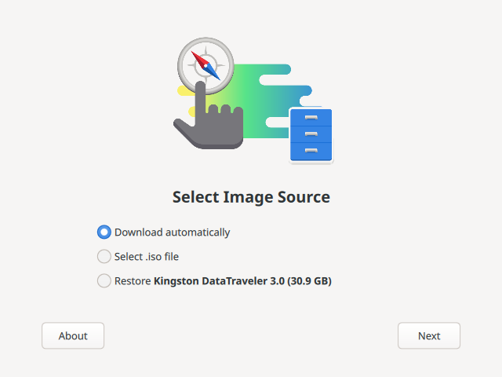{kind=link}
We will be downloading it automatically.
Select Your Release
Unlike Windows, there are many releases. You can do some research on these at https://fedoraproject.org/spins/
Personally, I use Fedora KDE Plasma Desktop. But for this guide, we will be working with the official release of Fedora Workstation.
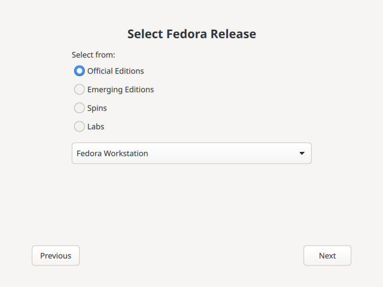{kind=link}
Version Selection
Select Version 40.
Choose your hardware architecture. This will most likely be Intel/AMD 64-bit.
Select the USB drive.
Under Download, check “Delete download after writing.”
Click “Download & Write.”
Install Fedora Workstation 40
Select Start Fedora-Workstation 40.
{kind=link}
You are now on the Fedora Workstation Desktop Environment! That was EASY!! You can choose to play around in this environment. It’s very lightweight and can give you a ground-level feel for it.
Select Install Fedora
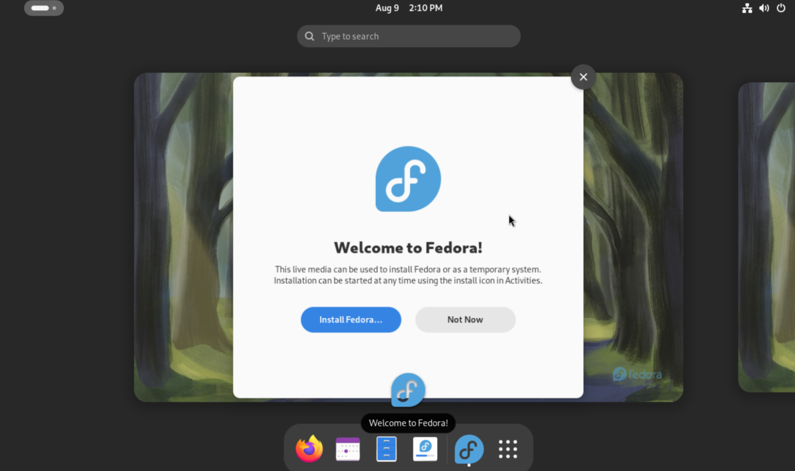{kind=link}
Select your language and click Next/Continue.
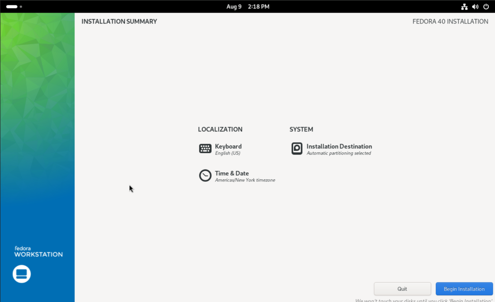{kind=link}
Change your Time & Date if needed.
Select the hard drive that you want to install on.
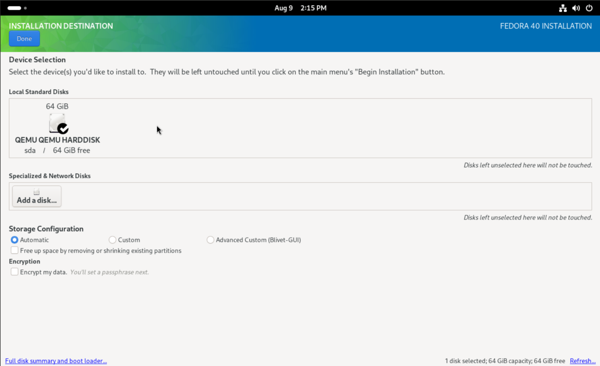{kind=link}
You will notice a checkmark on the drive that you want to install on. If it’s not checked, click it so it is.
Storage Configuration
For this guide, we will not be talking about RAID configuration. So for now, click “Automatic.”
Encryption
You can choose to encrypt your drive… or not.
Note
Encrypting your data will require setting a password that will be entered after the boot process and before reaching the OS.
Click “Done” at the top left.
You will be brought back to the installation summary.
Select “Begin Installation.”
This will start the installation.
Once complete, click “Finish Installation.”
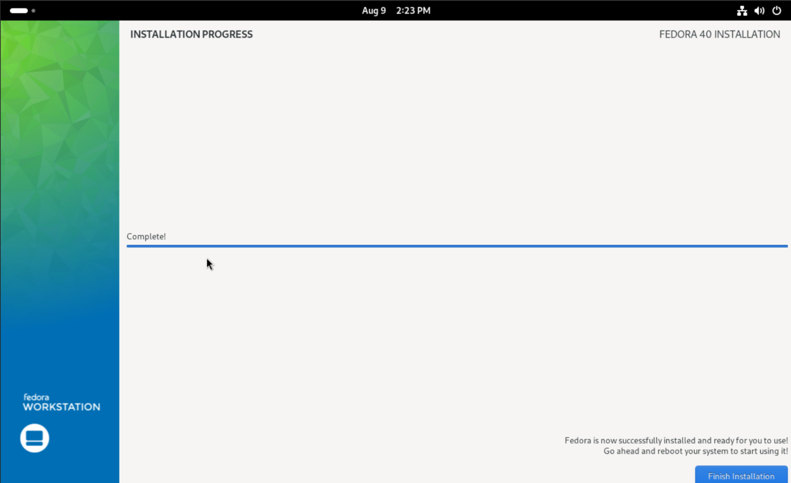{kind=link}
Once complete, unplug your USB from your device and give it a restart.
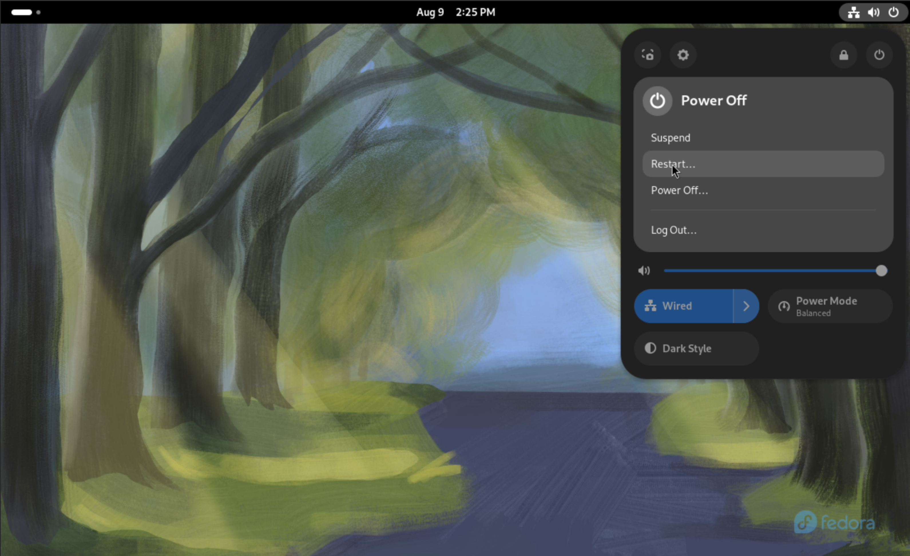{kind=link}
Setup Fedora Workstation 40
Now we’re ready to set up Fedora Workstation 40!
Click “Start Setup.”
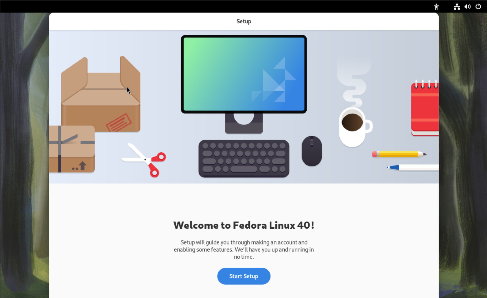{kind=link}
Privacy is up to you. Remember that Linux is open-source, meaning everyone contributes to make an awesome experience.
Click “Next” after your selection.
You’re going to want to enable Third Party Repositories for ease of use.
Click Enable Third-Party Repositories
Click Next.
The “About You” section is what you will log in with.
Put your name in, and then type in a username for this device.
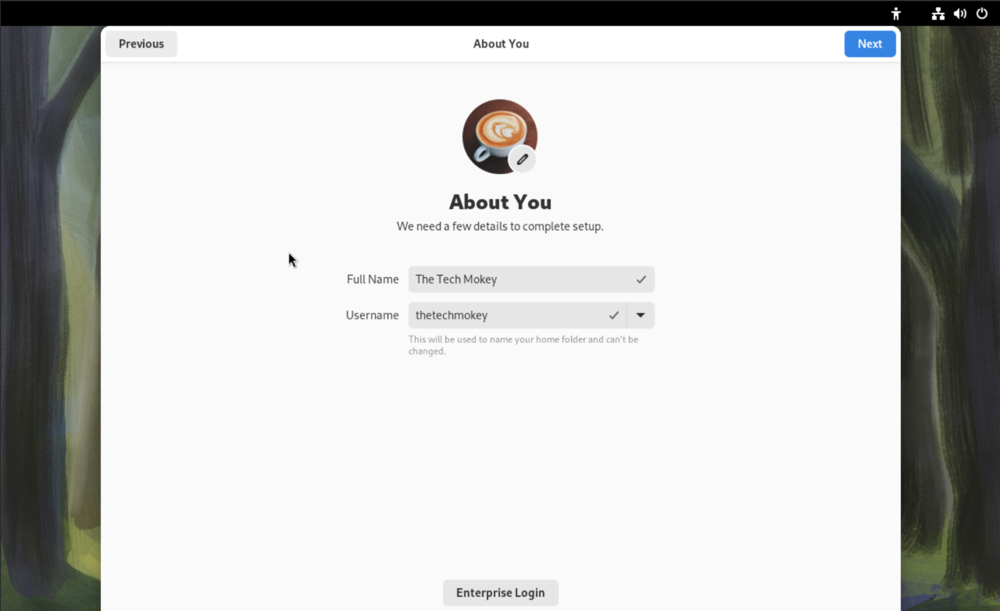{kind=link}
Click Next.
Type in your password.
Note
If you encrypted your hard drive, do not use the same password. It only makes sense.
All Done
Select Start Using Fedora.
Take a tour if you’d like, or skip the tour and get down to it.
Now, before you get into it, just like any OS, you’re going to want to update.
Click the overview button.
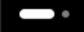{kind=link}
Click on “Software.”
Go to “Updates.”
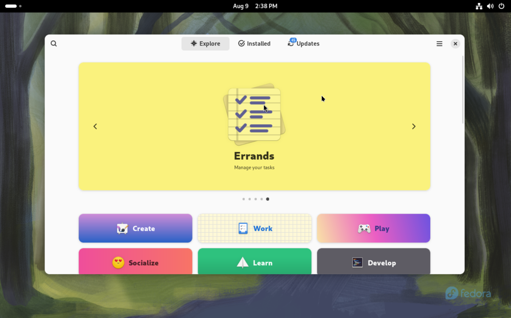{kind=link}
Then you’re going to install updates, then restart & update.
Click “Restart and Install.”
Alternatively, you can use the below in the terminal:
sudo dnf -y update
sudo dnf -y upgrade --refresh
Then top it off with a:
reboot
{kind=link}
Your system will restart and install updates.
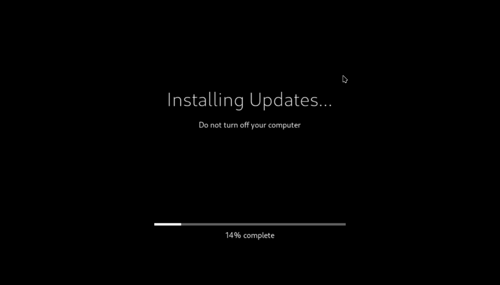{kind=link}
Congratulations! You have installed Fedora 40 Workstation.